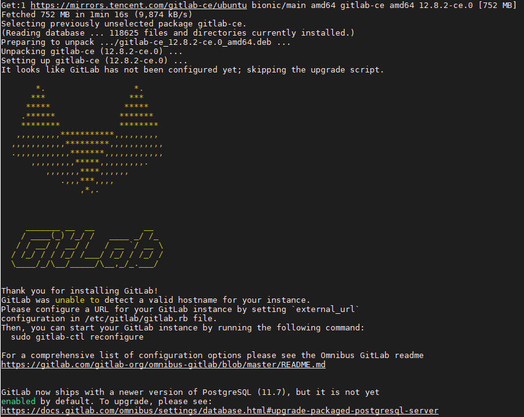

我们熟知github这个强大的源代码管理仓库，利用Git进行版本控制、专门用于存放软件代码与内容的共享虚拟主机服务。但是介意外网访问速度的原因，以及企业安全的角度，我们通常考虑自己搭建自己的类似hub站点，其实个人使用的话，我觉得完全没必要搭建hub，在公网平台上搭一个远程仓库就够用了。而本文将主要以Ubuntu18为例讲解如何搭建一个自己的gitlab仓库，好了写本文的目的估计都猜到了，没错，就是出于练手。
github的特点
Repo：项目，绝大多数的开源项目都会放在github上，包括Linus Torvalds参与的linux内核，基于repo可以提
issue，可以review code，可以有wiki，branch，tag等等都支持，还可以star和fork这样的repo。
Explore：基于兴趣显示了一些开源项目
Topics：按照主题显示的一些项目，可以选择某个主题继续观察
Trending：流行repo，可以选择语言和周期来显示
Events：显示github官方的一些活动
我们可以通过搜索关键字、stars:>1000、fork:>100、语言等来搜索高质量的仓库。
gitlab
GitLab是利用 Ruby on Rails 一个开源的版本管理系统，实现一个自托管的Git项目仓库，可通过Web界面进行访问公开的或者私人项目。它拥有与Github类似的功能，能够浏览源代码，管理缺陷和注释。可以管理团队对仓库的访问，它非常易于浏览提交过的版本并提供一个文件历史库。很多公司都是基于gitlab进行版本管理的。
搭建gitlab
第一步：安装一些依赖软件
1 | sudo apt-get update |
第二步：添加下载源：
添加下载源之前，如果没有添加GPG信任，需要先信任 GitLab 的 GPG 公钥:
1 | curl https://packages.gitlab.com/gpg.key 2> /dev/null | sudo apt-key add - &>/dev/null |
已信任的可以跳过，如果不添加信任，更新源的时候会有如下错误提示
1 | vim /etc/apt/sources.list.d/gitlab_gitlab-ee.list |
更新源成功如下图：
第三步：安装gitlab
1 | sudo apt-get install gitlab-ce |
安装成功后，如下图：

第四步：配置gitlab
下面的命令基本要用root权限，所以建议提前sudo -i
1 | vim /etc/gitlab/gitlab.rb |
第五步：启动重启查看状态：
1 | gitlab-ctl restart/start/status/stop # 通过gitlab-ctl help都能查看到该信息 |
启动浏览器访问试试？
不慌，此时我们可以使用gitlab-ctl tail来查看gitlab的服务日志，通过日志可以看到8080端口被别的进程占用了，那就改个端口咯。
修改配置
此时需要修改gitlab的配置信息，如下：
由于默认gitlab使用80端口，所以，我们需要修改gitlab的默认端口（unicorn会占用8080端口，nginx会占用80端口）。
1 | vim /etc/gitlab/gitlab.rb |
如果不出意外应该可以看到站点已经可以访问，如下图：
这是第一次登录让你添加新密码的。输入完密码，你会发现要登录，用户名是啥？不要慌，试试：root+您刚设置的新密码。
惊喜过后，添加个test仓库试试玩玩？
有没有疑问您的仓库存储在了哪里？
gitlab默认路径是：/var/opt/gitlab/git-data/repositories
cd进去看看？看不出就对了，这是git的文件镜像，不是给人读的文件。
如果要进行git仓库的迁移,做如下操作
1 |
|